Yanai
Yanai · Yamaguchi
Yanai
Highlighted on the Yamaguchi map.
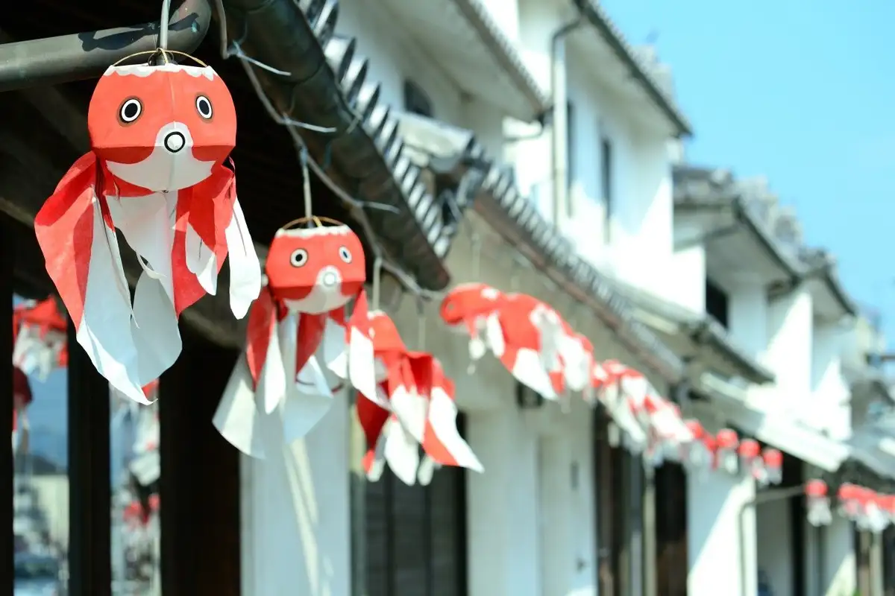
Dining
鳴門
Naruto
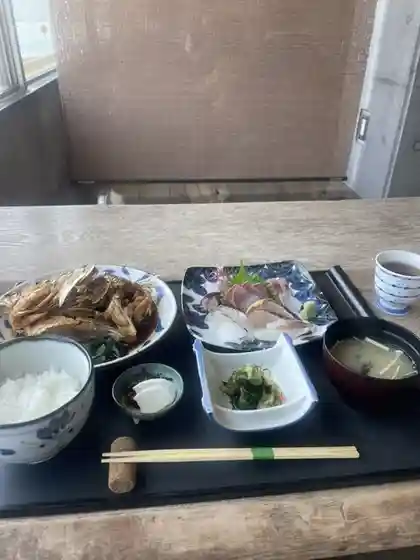
ぶっとび亭
Buttobi Tei
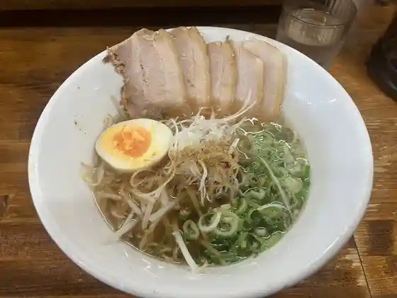
らーめん工房 麺や のぉくれ 柳井店
Raamen Koubou Men Ya Nookure Yanai Mise
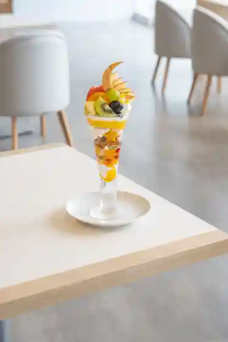
ホシ フルーツ
Hoshi Furuutsu
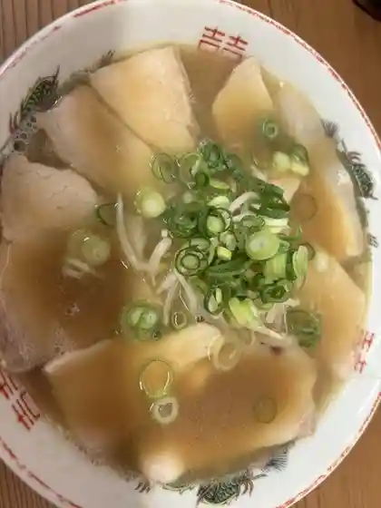
中華そば 洋RUN 柳井店
Chuuka Soba Hiroshi Run Yanai Mise
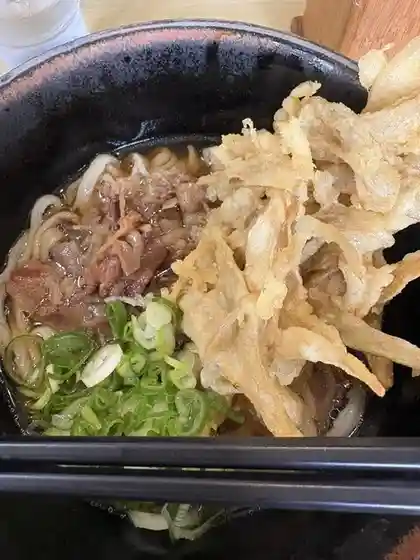
うどんの釜屋 柳井店
Udonno Kamaya Yanai Mise
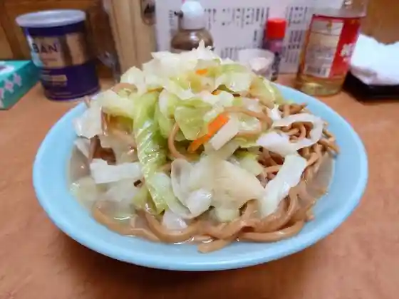
台湾
Taiwan
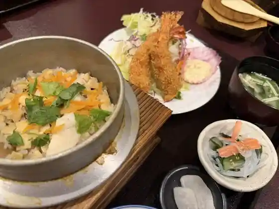
鮮魚 網代
Sengyo Ajiro
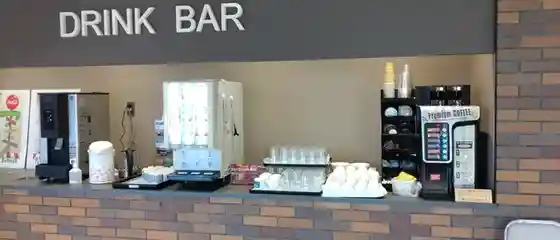
ヤナイフードホール
Yanaifuudohooru
創食浪漫館 TONTON
TONTON
フジヤマコーヒーロースターズ 本店
Fujiyamakoohiiroosutaazu Honten
どんどん 柳井中央店
Dondon Yanai Chuuou Mise
極楽とんび
Gokuraku Tonbi
瀬戸美
Seto Bi
福来順 柳井店
Fukurai Jun Yanai Mise
らんちはうすかのこ
Ranchihausukanoko
シェ・カワモト
シェ・カワモト
おおさか屋 柳井本店
Oosaka Ya Yanai Honten
サンマロー
Sanmaroo
どんどん ゆめタウン柳井店
Dondon Yume Taun Yanai Mise
四季旬菜 蔵や
Shiki Jun Na Kura Ya
うまいもんや 魚好人
Umaimonya Sakana Koujin
カフェテリア グランジュテ
Kafeteria Guranjute
１鳥万宝
1 Tori Manpou
のん太鮨 一丁目一番地 柳井店
Non Ta Sushi Itchoume Ichiban Chi Yanai Mise
穏やかうどんのしらかべや本店
Odaya Kaudonnoshirakabeya Honten
OURS LA FORET
OURS LA FORET
焼肉専門店 とらじ
Yakiniku Senmonten Toraji
果子乃季 本店
Kashi No Ki Honten
シュシュ 柳井店
Shushu Yanai Mise
たまごっちゃ
Tamagotcha
イトナミカフェ
Itonamikafe
喫茶れーがん
Kissa Reegan
さつきカフェ
Satsuki Kafe
キラク カジュアルダイニング ワインバー
Kiraku Kajuarudainingu Wainbaa
純喫茶 わんぷれーと
Jun Kissa Wanpureeto
自然生家
Shizen Seika
汐まち
Shio Machi
メルバニ 柳井店
Merubani Yanai Mise
エスパリエカゲツ 本店
Esupariekagetsu Honten
薪窯イタリアン アルベロ
Takigigama Itarian Arubero
三鈴食堂
Misuzu Shokudo
一五一八
Ichi Guichi Hachi
石釜パン工房 シュクルヴァン 柳井店
Ishigama Pan Koubou Shukuruvan Yanai Mise
KITCHEN Kobeya
KITCHEN Kobeya
ミッキー
Mikkii
ハナハナちどりだいにんぐ
Hanahana Chidoridainingu
やないろ
Yanairo
いとう食事処
Itou Shokuji Tokoro
丼とカフェはちよん
Donburi To Kafe Hachiyon
サティ屋
Satei Ya
ベーカリー十六 ゆめタウン柳井店
Beekarii Juuroku Yume Taun Yanai Mise
ジェラテリアヤナイ
Jierateriayanai
民宿 夕凪
Minshuku Yuunagi
丸久 柳井店
Marukyuu Yanai Mise
フジ 柳井店
Fuji Yanai Mise
いかち・旨
いかち・旨
佐川醤油店
Sagawa Shouyu Mise
ひがしや菓子店
Higashiya Kashi Mise
海鮮 お食事処 大橋
Kaisen O Shokuji Tokoro Oohashi
居酒屋おおはし
Izakaya Oohashi
うずしお母さんの店
Uzushio Kaasan No Mise
むさしの
Musashino
十八番食堂
Juuhachiban Shokudo
スズヤ食堂
Suzuya Shokudo
むっく オーシャン
Mukku Ooshan
亜香里
A Kaori
SANDLAND SHE
SANDLAND SHE
いろり焼居酒屋 虹の松原
Irori Yaki Izakaya Niji No Matsubara
松本洋菓子店
Matsumoto Yougashi Mise
カルビ屋大福 柳井店
Karubi Ya Daifuku Yanai Mise
やき肉 新栄
Yaki Niku Shin'ei
レストラン ティンパニー
Resutoran Teinpanii
プルミエ
Purumie
アップルミント
Appuruminto
漁庵
Ryou Iori
幸せの味
Shiawase No Aji
LAND KARTE
LAND KARTE
ふれあいショップ 一粒の麦
Fureai Shoppu Hitotsubu No Mugi
来来亭 柳井店
Rairai Tei Yanai Mise
果子乃季 ハーフスイーツ 柳井店
Kashi No Ki Haafusuiitsu Yanai Mise
山里ひづみ
Yamazato Hizumi
原始Zin
Genshi Zin
柳生
Yagyuu
フルーツパーラー ヤナイ
Furuutsupaaraa Yanai
ソウル
Souru
炉端炭火ダイニング海
Robata Sumibi Dainingu Umi
はれまる亭
Haremaru Tei
高木和風料理
Takagi Wafuu Ryouri
柳井カントリー倶楽部 レストラン
Yanai Kantorii Kurabu Resutoran
FLEUR
FLEUR
アルク 柳井中央店
Aruku Yanai Chuuou Mise
丸亀製麺 柳井店
Marugame Seimen Yanai Mise
カレーハウス CoCo壱番屋 ミスターマックス柳井店
Kareehausu Coco Ichiban Ya Misutaamakkusu Yanai Mise
ジョリーパスタ 柳井店
Joriipasuta Yanai Mise
貸蔵屋&茶房 難波庵
Tai Kura Ya & Sabou Nanba Iori
きじや
Kijiya
鉄板居酒屋 のろし
Teppan Izakaya Noroshi
はやし
Hayashi
ゆめタウン 柳井
Yume Taun Yanai
PORT BON MARCHE
PORT BON MARCHE
JA山口県 農産物直売所 遊気百菜館
Ja Yamaguchiken Nousanbutsu Chokubai Tokoro Yuu Ki Hyaku Saikan
フジヤマコーヒーロースターズ やない白壁出張所
Fujiyamakoohiiroosutaazu Yanai Shirakabe Shutchousho
セブンイレブン 柳井南町3丁目店
Sebun'irebun Yanai Minamimachi 3 Choume Mise
セブンイレブン 柳井駅前店
Sebun'irebun Yanai Ekimae Mise
LAWSON 柳井柳北店
LAWSON
しあわせギフト工房まつもと
Shiawase Gifuto Koubou Matsumoto
グランピングリゾート柳井
Guranpingurizooto Yanai
ファミリーマート 柳井新庄店
Famiriimaato Yanai Shinjou Mise
スーパーセンター トライアル 柳井店
Suupaasentaa Toraiaru Yanai Mise
Sea Gate
Sea Gate
ファミリーマート 柳井古開作店
Famiriimaato Yanai Ko Kai Saku Mise
マックスバリュ 柳井新庄店
Makkusubaryu Yanai Shinjou Mise
カフェ・菓子工房 ぼんじゅ～る
カフェ・菓子工房 ぼんじゅ~る
マックスバリュ 柳井店
Makkusubaryu Yanai Mise
セブンイレブン 柳井伊保庄店
Sebun'irebun Yanai Iho Shou Mise
セブンイレブン 柳井天神店
Sebun'irebun Yanai Tenjin Mise
山口柳井食堂
Yamaguchi Yanai Shokudo
ガスト 柳井店
Gasuto Yanai Mise
はなの舞 柳井駅前店
Hanano Mai Yanai Ekimae Mise
ジョイフル 山口柳井店
Joifuru Yamaguchi Yanai Mise
すき家 188号柳井店
Suki Ie 188 Gou Yanai Mise
サーティワンアイスクリーム ゆめタウン柳井店
Saateiwan'aisukuriimu Yume Taun Yanai Mise
マクドナルド 柳井店
Makudonarudo Yanai Mise
はま寿司 柳井店
Hama Sushi Yanai Mise
山内農場 柳井駅前店
Yamauchi Noujou Yanai Ekimae Mise
ジョイフル 山口大畠店
Joifuru Yamaguchidai Hatake Mise
ミスタードーナツ ゆめタウン柳井ショップ
Misutaadoonatsu Yume Taun Yanai Shoppu
牛角 柳井店
Gyuukaku Yanai Mise
寿司勝
Sushi Kachi
魚民 柳井駅前店
Uotami Yanai Ekimae Mise
果子乃季 ゆめタウン柳井店
Kashi No Ki Yume Taun Yanai Mise
ほっともっと 柳井駅南店
Hottomotto Yanai Eki Minami Mise
ケンタッキーフライドチキン ゆめタウン柳井店
Kentakkiifuraidochikin Yume Taun Yanai Mise
権兵衛
Gonbee
炉端焼き いろり
Robata Yaki Irori
馳走葉
Chisou Ha
焼肉・ホルモン冨まる 柳井店
焼肉・ホルモン冨まる 柳井店
茜
Akane
ほっともっと 柳井新市沖店
Hottomotto Yanai Shin'ichi Oki Mise
ムラカミ商店
Murakami Shouten
CEREZO
CEREZO
季節料理 うたかた
Kisetsu Ryouri Utakata
ANN
ANN
居酒屋 五蘊
Izakaya Goun
重枝醤油醸造場
Shigeeda Shouyu Jouzou Ba
川富寿司
Kawa Tomiju Tsukasa
むすんでひらいて ミスターマックス柳井店
Musundehiraite Misutaamakkusu Yanai Mise
元祖いろり焼き 虹のまつばら
Ganso Irori Yaki Niji Nomatsubara
DUO
DUO
しゃぶ亭そまき
Shabu Tei Somaki
喜魚・海鮮料理
喜魚・海鮮料理
nico
nico
串カツたける
Kushi Katsu Takeru
フジヤマコーヒーロースターズ みどりが丘図書館店
Fujiyamakoohiiroosutaazu Midoriga Oka Toshokan Mise
工房茶屋 ばさら窯
Koubou Chaya Basara Kama
どんべえ
Donbee
淡路島バーガー oldman par店
oldman par
千草
Chigusa
かながわ
Kanagawa
小料理 絹
Koryouri Kinu
411
411
珈琲 山草
Koohii Sansou
ピザハット 柳井店
Pizahatto Yanai Mise
庵ふ～ちゃん
Iori Fu ~ Chan
仕出しの河村
Shidashi No Kawamura
Bellissimo
Bellissimo
めいよし
Meiyoshi
カワムラ
Kawamura
お食事処 花水木
O Shokuji Tokoro Kasui Ki
イエヤ
Ieya
木阪賞文堂 白壁店
Kisaka Shou Bun Dou Shirakabe Mise
一心
Isshin
セブンイレブン 柳井港前店
Sebun'irebun Yanai Minato Mae Mise
大畠活魚センター 川崎鮮魚 神代店
Oohata Ikeuo Sentaa Kawasaki Sengyo Kamishiro Mise
島島
Shima Shima
じねんじょ村
Jinenjo Mura
旅館 海月
Ryokan Kurage
串揚げ居酒屋 戸越
Kushi Age Izakaya Tokoshi
LAWSON 柳井駅西店
LAWSON
小料理 来
Koryouri Rai
青の時間
Ao No Jikan
ごはんや
Gohanya
柳井グランドホテル
Yanai Gurandohoteru
キャビン
Kyabin
壽平
Juhei
やの里本舗
Yano Sato Honpo
カラオケBanBan 柳井店
BanBan
明日香
Asuka
おかだ
Okada
小林旅館
Kobayashi Ryokan
やきとり竜鳳 マックスバリュ柳井店
Yakitori Ryuuhou Makkusubaryu Yanai Mise
まつなが
Matsunaga
ジネンジョ ビーアールオー
Jinenjo Biiaaruoo
セブンイレブン 山口大畠駅前店
Sebun'irebun Yamaguchidai Hatake Ekimae Mise
花季
Hana Ki
工房 いな穂
Koubou Ina Ho
希島
Mare Shima
民宿 大野屋
Minshuku Oono Ya
trèfle& livre
trfle& livre
ダイニングバー トリトン
Dainingubaa Toriton
なの花
Nano Hana
鉄斉
Tetsu Sei
セブンイレブン 柳井新庄店
Sebun'irebun Yanai Shinjou Mise
ここ路
Koko Michi
Sazantei Yanai
Sazantei Yanai
Kazuhana
Kazuhana
Chou Chou Yanai
Chou Chou Yanai
Gusto Yanai
Gusto Yanai
Katsu Sushi
Katsu Sushi
Nokure
Nokure
Ichitorimaho
Ichitorimaho
Yo Run
Yo Run
Coco Ichibanya Mr Max Yanai
Coco Ichibanya Mr Max Yanai
Kamaya Yanai Udon
Kamaya Yanai Udon
Ryoan
Ryoan
Shabu Shabu Onyasai Yanai
Shabu Shabu Onyasai Yanai
Maidookinishokudo Yamaguchiyanaishokudo
Maidookinishokudo Yamaguchiyanaishokudo
Hamazushi Yanai
Hamazushi Yanai
Noroshi Teppan Izakaya
Noroshi Teppan Izakaya
Spaghetti and Pizza Jolly Pasta
Spaghetti and Pizza Jolly Pasta
Mister Donut Yume Town Yanai Shop
Mister Donut Yume Town Yanai Shop
Saint Malo
Saint Malo
Joyfull
Joyfull
Setomi
Setomi
Joyfull
Joyfull
Bami
Bami
Chiaki
Chiaki
Kalbi Daifuku Yanai
Kalbi Daifuku Yanai
Seafood Restaurant Ohashi
Seafood Restaurant Ohashi
Hiramoto Shokudo
Hiramoto Shokudo
Kyu
Kyu
Yonetoku
Yonetoku
Timpani Yumetown Yanai
Timpani Yumetown Yanai
Toraji Yakiniku
Toraji Yakiniku
Shummishuka Rakushun
Shummishuka Rakushun
Hiroshimayakiokonomi Kazuchan
Hiroshimayakiokonomi Kazuchan
Shanghai Saikan Ryuka
Shanghai Saikan Ryuka
Torizanmai Yanagi
Torizanmai Yanagi
Cafeteria Grand Jete
Cafeteria Grand Jete
Ito Shokuji Dokoro
Ito Shokuji Dokoro
Japanese Restaurant Yanai
Japanese Restaurant Yanai
Gyukaku Yanai
Gyukaku Yanai
Menmaru Tei Yanai
Menmaru Tei Yanai
Tessai
Tessai
Ebisu
Ebisu
Ren Yakiniki
Ren Yakiniki
Curry House CoCo Ichibanya MrMax Yanai
Curry House CoCo Ichibanya MrMax Yanai
Salon de Sugi
Salon de Sugi
June
June
Kanemitsu
Kanemitsu
Wamino Restaurant Shione
Wamino Restaurant Shione
Jin Jin
Jin Jin
Uomasa
Uomasa
Miya Chan
Miya Chan
Erika
Erika
Triton
Triton
Donshu Yakitori
Donshu Yakitori
Wakana Shokudo
Wakana Shokudo
Mitsue
Mitsue
Juhachiban Shokudo
Juhachiban Shokudo
Kudan
Kudan
Togeno Chaya Tambo
Togeno Chaya Tambo
New Matsumoto
New Matsumoto
Sanmontei
Sanmontei
Hatoba Shokudo
Hatoba Shokudo
Kobo Inaho
Kobo Inaho
Katsura
Katsura
Oakada
Oakada
Rakuten
Rakuten
Black Butterfly
Black Butterfly
Okaeri
Okaeri
Aji Sho
Aji Sho
Kanzashi
Kanzashi
Shitora Shoten Reizojigyosho
Shitora Shoten Reizojigyosho
Karaoke Studio Big One
Karaoke Studio Big One
Seoul
Seoul
Karaoke Achan
Karaoke Achan
Karaoke Sound Street
Karaoke Sound Street
Gokuraku Tombi Okonomiyaki
Gokuraku Tombi Okonomiyaki
Kamefuku Shokudo
Kamefuku Shokudo
Pokkapoka Bar
Pokkapoka Bar
Kokoro
Kokoro
Motsu No Michi Yanai
Motsu No Michi Yanai
Aki
Aki
Izumoya
Izumoya
Matasuhide Shokudo
Matasuhide Shokudo
Tampopo
Tampopo
Yoshizaki Shokudo
Yoshizaki Shokudo
Edokko
Edokko
Nakatsuya
Nakatsuya
Kirara Shirakabe No Machi Yanai
Kirara Shirakabe No Machi Yanai
Kijima
Kijima
Stand Coco
Stand Coco
Shot Bar Crib
Shot Bar Crib
Royal Kura
Royal Kura
Gourmet Laboratory 360 Stage Bar
Gourmet Laboratory 360 Stage Bar
Apple Mint
Apple Mint
Taiwanese Fukuraijun
Taiwanese Fukuraijun
Biton
Biton
Karaoke Sakaba Matsuyama
Karaoke Sakaba Matsuyama
Lounge Matsumoto
Lounge Matsumoto
Yoridori Produce Midori Yanai
Yoridori Produce Midori Yanai
Karaoke Jitan
Karaoke Jitan
Izakaya Umataku
Izakaya Umataku
Lunch House Kanoko
Lunch House Kanoko
Human
Human
Stay
柳井クルーズホテル
Yanai Kuruuzuhoteru
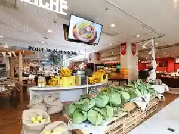
HOTEL R9 The Yard 柳井
HOTEL R9 The Yard
Sights
Shirakabe no Streetscape (Yanai Ko City Kanaya Chiku Dentoteki Kenzobutsu Gun Hozon Chiku)
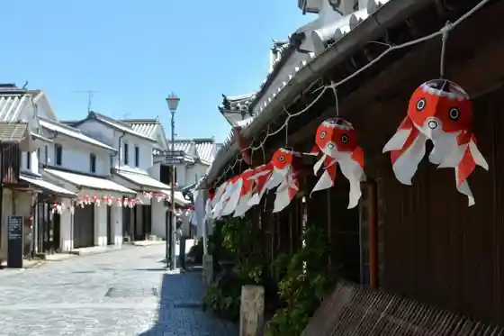
Shiikuretto Museum Yanai Yamaguchi
Yamaguchi Furawa Land
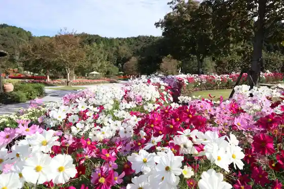
Yanai Chibetto
Suiitsubaikingu
Heguri Shima
Kochi Zu Wo Katate Nimachiwo Aruko U (Shirakabe no Town Yanai Hen)
Kochi Zu Wo Katate Ni, Machiwo Aruko U Kikangentei Kochi Zu Uoku Iwakuni Tategahama (Yanai)
(Yanai Kingyo Chochin) Ichikara Seisaku Experience
Aderiihoshi Park (Yanai Uerunesu Park)
Ohata Seto no Uzushio
Kochi Zu Wo Katate Ni, Machiwo Aruko U Kikangentei Kaido Uoku Oze Uenoseki Okan Yanai (Yanai)
Shirakabe no Town Kanko Gaido
Kanro Shoyu Museum (Sagawa Shoyu Mise)
Kochi Zu Wo Katate Nimachiwo Aruko U (Ohata Hen)
“ Yanai Shiifudosutoriito ” Sutanpurarii
Kon Ishiyama
Kochi Zu Wo Katate Nimachiwo Aruko U (Enzaki Atsuki Hen)
Chausuyama Burial Mound
O Kashi Tsukuri Experience
Kashi no Ki Ajisai Sono
DISCOVER WEST Haikingu Jimoto Gaido to Town Aruki (Shirakabe no Town Yanai Kosu)
Myo En Tera (Gatsu Sei Tenjikan Kiyoshi Kyoso Do)
Kochi Zu Wo Katate Nimachiwo Aruko U (Nichi Seki)
Hangi (Karauta Shu : Kiyoshi Kyo Iko) Niyoru Mokuhan Insatsu no Experience
Oobi Hime Hachiman Shrine
Sensho Tera
Nichi Seki Campground
Shoka Museum Muroya no Sono (Oda Ie no Seikatsu Yogu Shoka Shiryo Choka)
Fureaidokoro 437
Shirakabe Gaku Yu Kan
Yanai Streetscape Museum
Yanai Sakura Dote
Sazanseto Iho Sho Marin Park
Kunikida Doppo Kyutaku
Ohata Fureai Beach
Yanai Kanko Boranteia no Kai
Yoda Garyu Ume
Yanai Yakusho